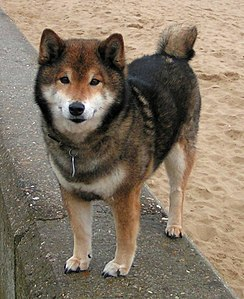

Bark The Dog
Menu
The Shiba Inu (柴犬, Japanese: [ɕiba inɯ]) is a breed of hunting dog from Japan. A small-to-medium breed, it is the smallest of the six original and distinct spitz breeds of dog native to Japan

Peerawit Khernpratiyut 642110323